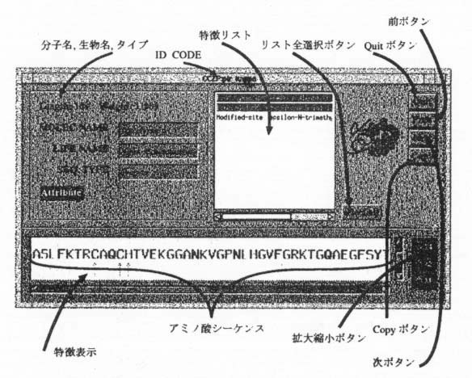
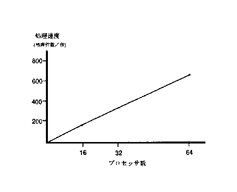

並列非正規関係データベース Kappa-P は、知識ベース管理システムや知識 情報処理システムや遺伝子情報処理システムに対し、知識ベースを格納するた めの器としてのデータベース管理機能を提供するものである。
知識ベース管理システムや知識情報処理システムや遺伝子情報処理システムが 扱うデータは、構造が複雑かつその内容も多種多様で、それに対する操作もさ まざまであり、また、データ量も非常に膨大である。Kappa-P は、そのような データを効率的に扱うことができるようになっている。
Kappa-P の特徴は、非正規関係モデルと並列処理にある。非正規関係モデルの 採用により複雑な構造のデータを効率的に扱うことが可能になっている。また、 並列処理により大量のデータを短時間に処理することが可能になる。
これを確かめるために、分子生物学データベースを統合化した蛋白質データベー ス (配列情報、三次元構造情報等) を設計しその上で動作する応用プログラム を作った。従来の関係データベース管理システムでは、このような複雑な構造 のデータベースを効率的に表現、操作することはできなかった。また、複数の プロセサを使った並列処理により、分子生物学データベースのモチーフ検索 などの重い処理を短時間で処理できるようになった。

統合分子生物学データベース・インタフェース

Kappa-P によるモチーフ検索の台数効果